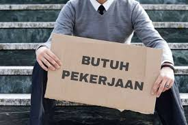

Strategi Alternatif untuk Mengurangi Kemiskinan dan Pengangguran di Indonesia
Penulis: Daffa Nuzul Al Hafiz - SMK Telkom Purwokerto
11 Agustus 2025 • 16:00 WIB
Pengangguran dan kemiskinan menjadi tantangan serius bagi perekonomian Indonesia. Keduanya saling terkait erat dan memerlukan solusi komprehensif agar dapat diatasi secara efektif...
Pelatihan Kerja
Cara mengatasi kemiskinan bisa dilakukan dengan memberikan pelatihan keterampilan yang relevan dengan kebutuhan industri, sehingga tenaga kerja lebih siap masuk ke pasar kerja.
Peningkatan Sektor UMKM
UMKM memiliki potensi besar dalam menciptakan lapangan kerja baru. Dukungan pemerintah melalui akses modal, teknologi, dan pemasaran sangat penting untuk memperkuat sektor ini.
Pendidikan dan Inovasi
Peningkatan kualitas pendidikan serta dorongan inovasi menjadi kunci dalam mengurangi angka pengangguran dan menciptakan pertumbuhan ekonomi yang berkelanjutan.